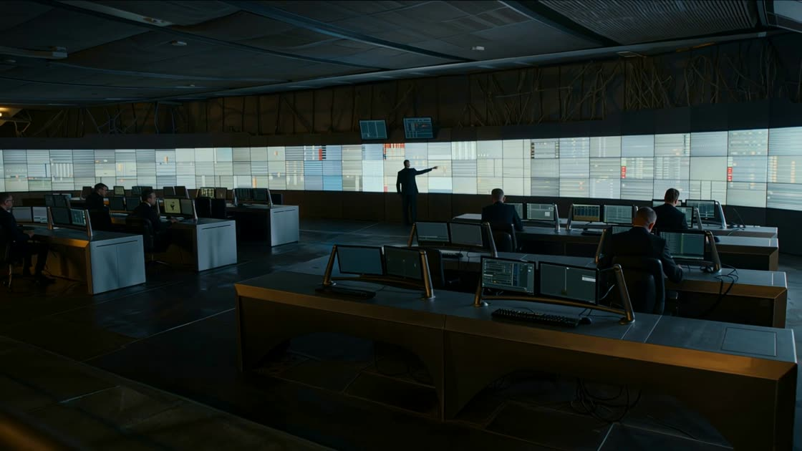
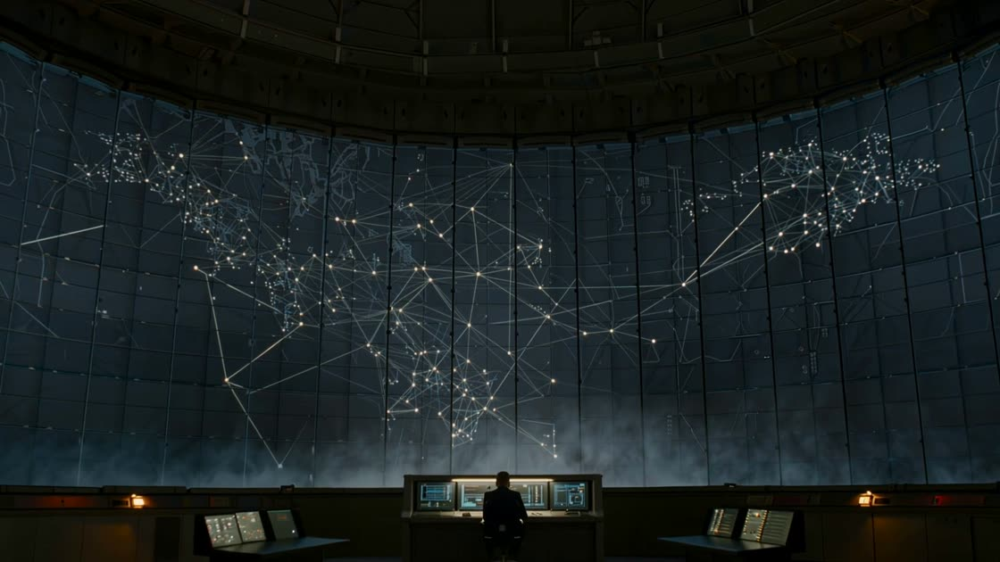
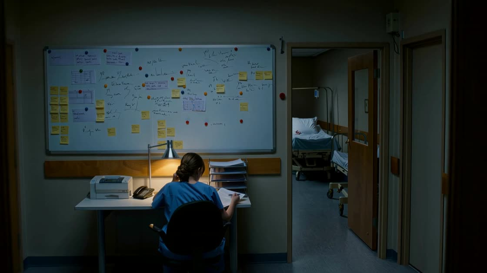
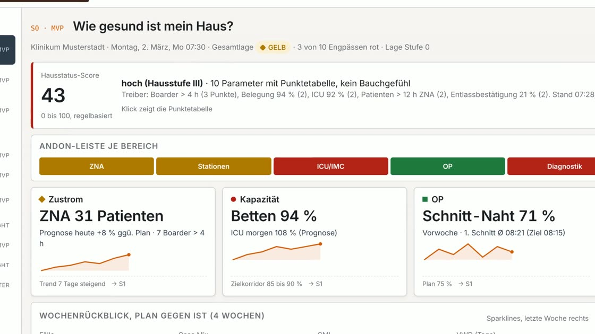

Vorausschauen statt reagieren
Wer erst am Morgen nach dem Bett fragt, kann nur noch reagieren. Der Leitstand zeigt am Vortag, was morgen eng wird, solange sich noch etwas ändern lässt.
Vorausschauen statt reagieren.
Im Krankenhaus kennt jeder Bereich seine eigene Lage. Wie Notaufnahme, OP, Intensivstation, Stationen und Entlassung zusammenhängen, sieht oft niemand, bis es zu spät ist. Ein Leitstand zeigt diese Kette einen Tag vorher.
Wer erst am Morgen nach dem Bett fragt, kann nur noch reagieren. Der Leitstand zeigt am Vortag, was morgen eng wird, solange sich noch etwas ändern lässt.
Ein Notfall in der Nacht, eine Krankmeldung, ein offener Befund: Jedes für sich ist harmlos. Der Leitstand zeigt, was zusammenkommt.
Das System schlägt Maßnahmen vor. Die Freigabe bleibt bei den Verantwortlichen im Haus, und in Ihre Primärsysteme wird nichts zurückgeschrieben.



Sechshundert Betten, zehn OP-Säle, eine Notaufnahme, die nie schließt. Gesteuert auf Zuruf.
Das Steuerungscockpit ist als klickbares Modell gebaut: Gesamtlage, Engpässe der nächsten 24 Stunden und für jeden Engpass ein bis drei Optionen mit Freigabe.
Cockpit öffnenDas Modell liegt hinter einer Anmeldung. Die Zugangsdaten erhalten Sie von uns.

Der Leitstand arbeitet mit den Daten, die Sie schon haben, etwa Bewegungsdaten, OP-Plan und Dienstplan. Wo Daten fehlen oder unzuverlässig sind, zeigt er das an.
Immer ein Mensch. Das System schlägt vor, die Freigabe liegt bei der zuständigen Rolle, zum Beispiel beim Stationsarzt oder bei der OP-Koordination. Grundsatzfragen werden vorab als Regeln mit dem Haus festgelegt.
Nein. Er zeigt Kapazitäten und Abhängigkeiten. Medizinische Entscheidungen bleiben bei den Behandelnden.
Nein. Der Leitstand liest und zeigt an. Ein Rückschreiben in Primärsysteme findet nicht statt.
Das hängt von Ihrem Haus ab. Im Demo-Haus sind es Aufnahme- und Verlegungsdaten, OP-Plan, Dienstplan und Logistik. Der Leitstand zeigt zu jeder Zahl Quelle und Stand.
Nein. Die beiden Dienstage oben und das Cockpit zeigen ein Demo-Haus mit Beispieldaten. Wie der Leitstand in Ihrem Haus aussieht, klären wir im Gespräch.
Wir zeigen Ihnen den Leitstand am Demo-Haus und besprechen, wie er in Ihrem Haus aussehen kann.